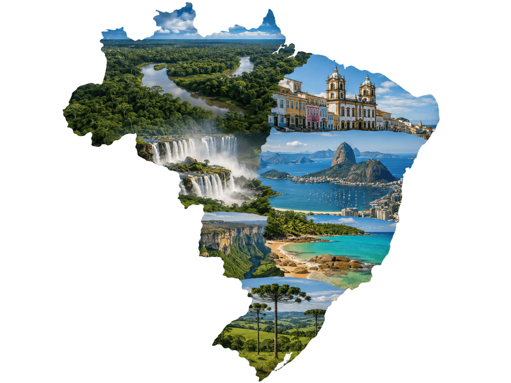

Explore o Brasil em uma só trilha
Conheça destinos, culturas, sabores e paisagens de todas as regiões brasileiras.
Ver destinosSobre o projeto
O Trilha Turismo Brasil é um guia turístico criado para apresentar regiões, estados, paisagens, comidas típicas e pontos turísticos do Brasil
Nossa proposta é valorizar o turismo nacional e inspirar novas formas de conhecer o país
